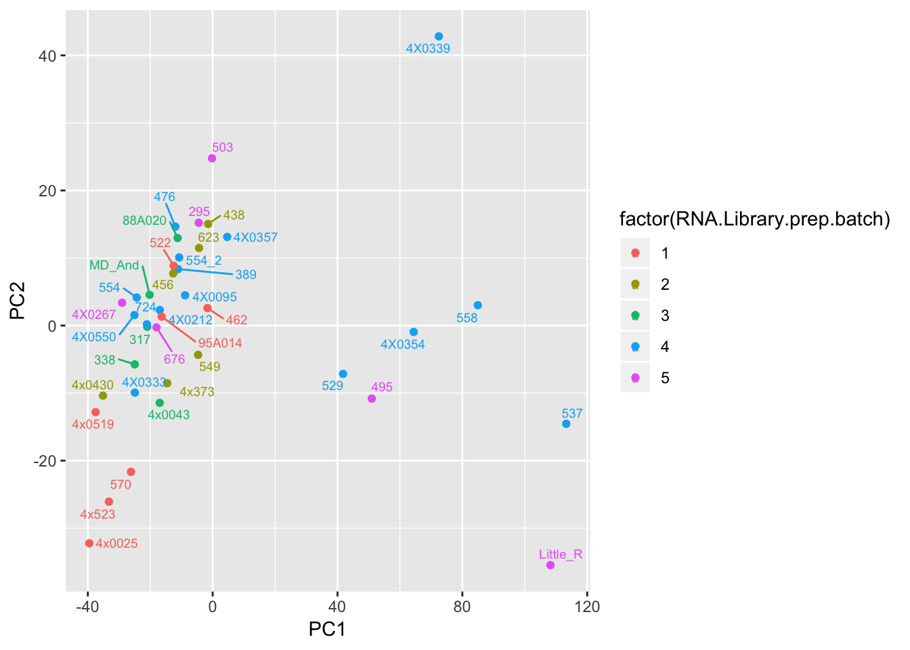
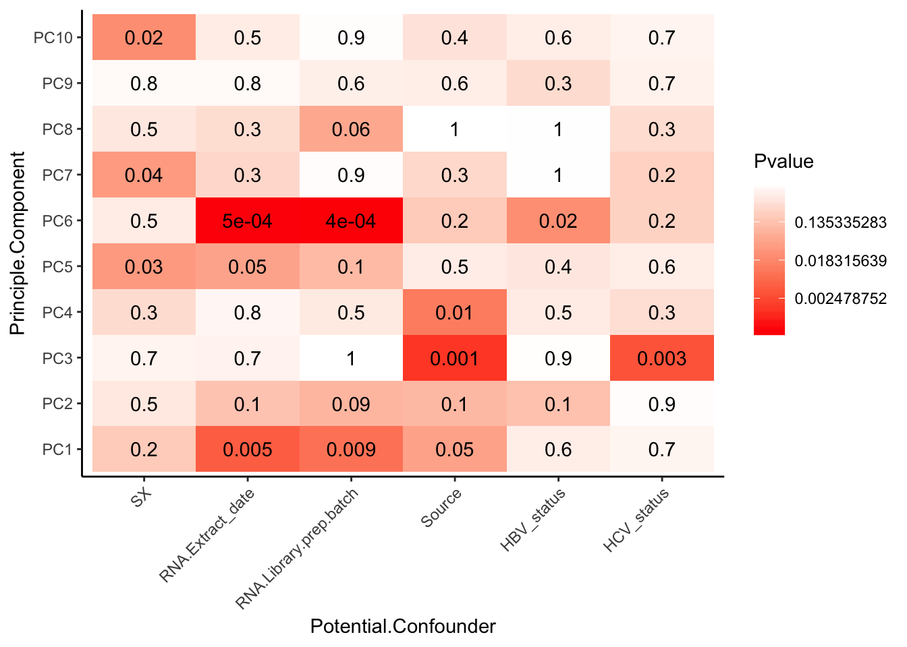

Last updated: 2019-03-20
Checks: 5 1
Knit directory: Comparative_eQTL/analysis/
This reproducible R Markdown analysis was created with workflowr (version 1.2.0). The Report tab describes the reproducibility checks that were applied when the results were created. The Past versions tab lists the development history.
The R Markdown is untracked by Git. To know which version of the R Markdown file created these results, you’ll want to first commit it to the Git repo. If you’re still working on the analysis, you can ignore this warning. When you’re finished, you can run wflow_publish to commit the R Markdown file and build the HTML.
Great job! The global environment was empty. Objects defined in the global environment can affect the analysis in your R Markdown file in unknown ways. For reproduciblity it’s best to always run the code in an empty environment.
The command set.seed(20190319) was run prior to running the code in the R Markdown file. Setting a seed ensures that any results that rely on randomness, e.g. subsampling or permutations, are reproducible.
Great job! Recording the operating system, R version, and package versions is critical for reproducibility.
Nice! There were no cached chunks for this analysis, so you can be confident that you successfully produced the results during this run.
Great! You are using Git for version control. Tracking code development and connecting the code version to the results is critical for reproducibility. The version displayed above was the version of the Git repository at the time these results were generated.
Note that you need to be careful to ensure that all relevant files for the analysis have been committed to Git prior to generating the results (you can use wflow_publish or wflow_git_commit). workflowr only checks the R Markdown file, but you know if there are other scripts or data files that it depends on. Below is the status of the Git repository when the results were generated:
Ignored files:
Ignored: .Rproj.user/
Ignored: code/snakemake_workflow/bahblah
Untracked files:
Untracked: ._workflowr.yml.swp
Untracked: analysis/20190320_Check-RNAseq-PCs.Rmd
Untracked: docs/figure/
Unstaged changes:
Modified: _workflowr.yml
Modified: analysis/index.Rmd
Note that any generated files, e.g. HTML, png, CSS, etc., are not included in this status report because it is ok for generated content to have uncommitted changes.
There are no past versions. Publish this analysis with wflow_publish() to start tracking its development.
library(corrplot)
library(ggfortify)
library(readxl)
library(tidyverse)
library(psych)
library(ggrepel)
library(knitr)
library(reshape2)# Read in count table, filtering for TPM>1
CountTable <- read.table('../output/CountTable.tpm.txt', header=T, check.names=FALSE, row.names = 1) %>%
filter(rowSums(.) > 1)
# Read in metadata
Metadata <- as.data.frame(read_excel("../data/Metadata.xlsx"))Now perform PCA, plot a few visualizations
# pca with log-transformed count table (+ 0.1 pseudocount)
pca_results <- prcomp(t(log(CountTable+0.1)), center=T, scale. = T)
# Plot PCs
autoplot(pca_results)# Merge with metadata
Merged <- merge(pca_results$x, Metadata, by.x = "row.names", by.y = "Individual.ID", all=TRUE)
kable(head(Merged))| Row.names | PC1 | PC2 | PC3 | PC4 | PC5 | PC6 | PC7 | PC8 | PC9 | PC10 | PC11 | PC12 | PC13 | PC14 | PC15 | PC16 | PC17 | PC18 | PC19 | PC20 | PC21 | PC22 | PC23 | PC24 | PC25 | PC26 | PC27 | PC28 | PC29 | PC30 | PC31 | PC32 | PC33 | PC34 | PC35 | PC36 | PC37 | PC38 | PC39 | Source | Individual.Name | Yerkes.ID | Label | Notes | FileID.(Library_Species_CellType_FlowCell) | SX | RNA.Library.prep.batch | RNA.Sequencing.Lane | Sequencing.Barcode | RNA.Extract_date | DNASeq_FastqIdentifier | DNA.library.prep.batch | DNA.Sequencing.Lane | DNA.Sequencin.Barcode | DNA.Extract_date | Age | X__1 | Post.mortem.time.interval | RIN | Viral.status | RNA.total.reads.mapped.to.genome | RNA.total.reads.mapping.to.ortho.exons | Subspecies | DOB | DOD | DOB Estimated | Age (DOD-DOB) | OldLibInfo. RIN,RNA-extractdate,RNAbatch |
|---|---|---|---|---|---|---|---|---|---|---|---|---|---|---|---|---|---|---|---|---|---|---|---|---|---|---|---|---|---|---|---|---|---|---|---|---|---|---|---|---|---|---|---|---|---|---|---|---|---|---|---|---|---|---|---|---|---|---|---|---|---|---|---|---|---|---|---|---|
| 295 | -16.209924 | -39.412051 | -12.6609324 | 37.8823277 | -31.0051139 | -11.19556 | -3.293419 | 6.914787 | 31.22802 | 9.387597 | -18.921687 | 2.302928 | 6.658864 | 7.418947 | -0.4551106 | -7.1500666 | -9.419899 | -14.910621 | 5.729965 | 4.446016 | -7.902738 | 4.4670507 | -6.7363433 | 5.6427558 | 0.0628024 | 8.457065 | 16.643477 | 5.9641275 | 14.240850 | 8.746583 | 22.44346 | 8.1452946 | -26.376143 | -26.042034 | 1.411441 | 29.3035945 | 69.538376 | -6.7226052 | 0 | Yerkes | Duncan | 295 | 295 | NA | 24_CM_3_L006.bam | M | 5 | 6 | 18 | 2018-10-10 | YG3 | 1 | 1 | NA | 2018-09-01 | 40 | NA | 0.5 | 7.3 | NA | 45.67002 | 17.51562 | verus/ellioti | 24731 | 39386 | NA | 40 | 6.3,6/14/2016,2 |
| 317 | -77.598637 | -7.285478 | 27.7851831 | 26.9782914 | -50.5795688 | 35.50836 | -38.647176 | 22.304682 | 29.24587 | -7.972713 | -4.291489 | -10.836475 | -27.736870 | 13.116081 | -25.5213242 | 0.4864905 | -23.591190 | 26.332198 | -18.995956 | 79.950479 | -25.880549 | -7.0602532 | -3.1543220 | -32.1559370 | 0.1775541 | 23.843101 | -4.452578 | -0.5306732 | 3.358530 | -8.339882 | -17.73597 | 11.4968912 | 6.626615 | 5.764973 | -1.359602 | -7.6224544 | -5.219604 | 0.6896142 | 0 | Yerkes | Iyk | 317 | 317 | NA | 11_CM_3_L004.bam | M | 3 | 4 | 4 | 2016-06-07 | YG2 | 1 | 1 | NA | 2018-09-01 | 44 | NA | 2.5 | 7.6 | NA | 42.75617 | 17.18811 | verus | 22859 | 38832 | NA | 43 | NA |
| 338 | -76.811433 | -23.588356 | 17.5616055 | -6.1129203 | 30.3786753 | -11.80251 | -24.639145 | -39.522681 | -77.01271 | -64.199910 | 11.431070 | -6.266548 | -35.178668 | 12.789184 | -1.1044315 | 17.2460661 | -28.688649 | 36.734930 | 1.741396 | -25.663090 | 11.093598 | -0.3704745 | 0.3318220 | -15.7456145 | 21.5161869 | 17.545671 | 27.323194 | 26.9509079 | 16.720759 | 16.889667 | -15.71704 | 0.7842111 | -15.033587 | -8.085853 | 2.586582 | -0.0838811 | 5.268759 | -2.5440612 | 0 | Yerkes | Maxine | 338 | 338 | NA | 8_CF_3_L008.bam | F | 3 | 8 | 6 | 2016-06-07 | YG1 | 1 | 1 | NA | 2018-09-01 | 53 | NA | NA | 7.2 | NA | 50.52632 | 19.49295 | verus | 20821 | 40179 | Yes | 53 | NA |
| 389 | -9.035152 | -42.472885 | -14.1230302 | 3.7761863 | -11.9413104 | -10.59732 | 11.476496 | -10.044294 | -6.07530 | 13.302190 | -10.716897 | 1.289022 | -7.888694 | 39.244380 | -0.0374953 | -8.3470084 | 16.795318 | -8.959853 | 2.707977 | -11.564602 | -7.719343 | -2.4054566 | 12.2189964 | 16.7895009 | 11.8680602 | 29.733060 | -7.317870 | 35.2784335 | -12.768171 | -25.159829 | -23.31646 | -34.5523828 | 55.254399 | 7.193322 | -27.242167 | 23.2062388 | 10.060393 | -10.4575831 | 0 | Yerkes | Rogger | 389 | 389 | NA | NA | M | 4 | NA | 23 | 2018-10-10 | YG39 | 2 | 2 | NA | 2018-10-01 | 45 | NA | NA | 5.7 | NA | NA | NA | verus | 25204 | 41656 | NA | 45 | NA |
| 438 | 38.737750 | -98.961705 | -6.4241994 | -0.4050236 | 0.0487974 | -29.96134 | -7.819097 | 4.098805 | -5.33942 | -3.408825 | 23.913235 | -1.116522 | -4.059425 | 4.850208 | 16.2480355 | 0.8583629 | -14.200342 | 17.044620 | -4.688113 | -12.955579 | -5.267388 | -1.6547045 | 0.7736846 | 1.7292019 | -2.0160545 | -3.909655 | 10.519180 | -24.5084626 | 5.336721 | -36.539790 | 25.37062 | 34.8222446 | 28.385570 | 31.514002 | 46.684492 | 19.9919029 | -3.156439 | -22.8509246 | 0 | Yerkes | Cheeta | 438 | 438 | NA | 155_CF_3_L004.bam | F | 2 | 4 | 8 | 2016-06-22 | YG22 | 1 | 1 | NA | 2018-09-01 | 55 | NA | NA | 5.6 | NA | 55.30614 | 18.06375 | verus | 20821 | 40909 | Yes | 55 | NA |
| 456 | -6.639290 | -80.557052 | -0.5099719 | 2.1557191 | 15.4551016 | -10.15878 | 2.904520 | -4.162599 | -13.39653 | 8.948876 | 28.547391 | -4.611110 | -11.118889 | -25.646718 | 13.9431546 | -10.9218697 | -10.988095 | 2.564652 | -3.315330 | -12.427946 | -23.478718 | 9.9509073 | 10.4812892 | -0.7515643 | -5.7613917 | -4.340921 | -3.857019 | -31.4583272 | 8.353572 | -1.643735 | 6.45784 | 41.0405598 | 11.636251 | -17.878808 | -70.401404 | -11.3465290 | -1.876168 | -3.7437993 | 0 | Yerkes | Mai | 456 | 456 | NA | 156_CF_3_L001.bam | F | 2 | 1 | 15 | 2016-06-22 | YG23 | 1 | 1 | NA | 2018-09-01 | 49 | NA | NA | 5.5 | NA | 54.00665 | 20.13760 | verus | 23377 | 41275 | Yes | 49 | NA |
# Plot a couple PCs with a couple potential covariates
ggplot(Merged, aes(x=PC2, y=PC1, color=factor(RNA.Extract_date), label=Row.names)) +
geom_point() +
geom_text_repel(size=2.5)
ggplot(Merged, aes(x=PC2, y=PC1, color=RIN, label=Row.names)) +
geom_point() +
geom_text_repel(size=2.5)Now I am going to look more systematically for significant correlations between potential observed confounders in the Metadata and the first 10 PCs. Will use Spearman’s correlation to test continuous continuous confounders, will use anova for categorical confounders.
# Grab first 10 PCs
PCs_to_test <- Merged[,2:11]
kable(head(PCs_to_test))| PC1 | PC2 | PC3 | PC4 | PC5 | PC6 | PC7 | PC8 | PC9 | PC10 |
|---|---|---|---|---|---|---|---|---|---|
| -16.209924 | -39.412051 | -12.6609324 | 37.8823277 | -31.0051139 | -11.19556 | -3.293419 | 6.914787 | 31.22802 | 9.387597 |
| -77.598637 | -7.285478 | 27.7851831 | 26.9782914 | -50.5795688 | 35.50836 | -38.647176 | 22.304682 | 29.24587 | -7.972713 |
| -76.811433 | -23.588356 | 17.5616055 | -6.1129203 | 30.3786753 | -11.80251 | -24.639145 | -39.522681 | -77.01271 | -64.199910 |
| -9.035152 | -42.472885 | -14.1230302 | 3.7761863 | -11.9413104 | -10.59732 | 11.476496 | -10.044294 | -6.07530 | 13.302190 |
| 38.737750 | -98.961705 | -6.4241994 | -0.4050236 | 0.0487974 | -29.96134 | -7.819097 | 4.098805 | -5.33942 | -3.408825 |
| -6.639290 | -80.557052 | -0.5099719 | 2.1557191 | 15.4551016 | -10.15878 | 2.904520 | -4.162599 | -13.39653 | 8.948876 |
# Grab potential continuous confounders that make sense to test
Continuous_confounders_to_test <- Merged[, c("RIN", "Age")]
kable(head(Continuous_confounders_to_test))| RIN | Age |
|---|---|
| 7.3 | 40 |
| 7.6 | 44 |
| 7.2 | 53 |
| 5.7 | 45 |
| 5.6 | 55 |
| 5.5 | 49 |
# Test
Spearman_test_results <- corr.test(Continuous_confounders_to_test, PCs_to_test, adjust="none", method="spearman")
# Plot
Spearman_test_results$p %>%
melt() %>%
rename(Pvalue = value, Principle.Component=Var2, Potential.Confounder=Var1) %>%
ggplot(aes(x=Potential.Confounder, y=Principle.Component, fill=Pvalue)) +
geom_tile() +
geom_text(aes(label = signif(Pvalue, 1))) +
scale_fill_gradient(limits=c(0.001, 1), breaks=c(0.001,0.01,0.1,1), trans = 'log', high="white", low="red" ) +
theme_classic()# Grab potential categorical confounders that make sense to test
Categorical_confounders_to_test <- Merged[,c("Viral.status", "SX","RNA.Extract_date", "RNA.Library.prep.batch", "Source")]
kable(head(Categorical_confounders_to_test))| Viral.status | SX | RNA.Extract_date | RNA.Library.prep.batch | Source |
|---|---|---|---|---|
| NA | M | 2018-10-10 | 5 | Yerkes |
| NA | M | 2016-06-07 | 3 | Yerkes |
| NA | F | 2016-06-07 | 3 | Yerkes |
| NA | M | 2018-10-10 | 4 | Yerkes |
| NA | F | 2016-06-22 | 2 | Yerkes |
| NA | F | 2016-06-22 | 2 | Yerkes |
# Viral status will need to be reformatted to make factors that make sense for testing (example: HBV+, HBV- HCV+, HCV- are factors that make sense). Let's assume that NA means negative status.
Categorical_confounders_to_test$HBV_status <- grepl("HBV+", Categorical_confounders_to_test$Viral.status)
Categorical_confounders_to_test$HCV_status <- grepl("HCV+", Categorical_confounders_to_test$Viral.status)
Categorical_confounders_to_test <- Categorical_confounders_to_test[, -1 ]
kable(head(Categorical_confounders_to_test))| SX | RNA.Extract_date | RNA.Library.prep.batch | Source | HBV_status | HCV_status |
|---|---|---|---|---|---|
| M | 2018-10-10 | 5 | Yerkes | FALSE | FALSE |
| M | 2016-06-07 | 3 | Yerkes | FALSE | FALSE |
| F | 2016-06-07 | 3 | Yerkes | FALSE | FALSE |
| M | 2018-10-10 | 4 | Yerkes | FALSE | FALSE |
| F | 2016-06-22 | 2 | Yerkes | FALSE | FALSE |
| F | 2016-06-22 | 2 | Yerkes | FALSE | FALSE |
# Do one-way anova test as a loop.
# First initialize results matrix
Pvalues <- matrix(ncol = dim(PCs_to_test)[2], nrow = dim(Categorical_confounders_to_test)[2])
colnames(Pvalues) <- colnames(PCs_to_test)
rownames(Pvalues) <- colnames(Categorical_confounders_to_test)
for (confounder in seq_along(Categorical_confounders_to_test)) {
for (PC in seq_along(PCs_to_test)) {
res.aov <- aov(PCs_to_test[[PC]] ~ Categorical_confounders_to_test[[confounder]])
pval <- summary(res.aov)[[1]][["Pr(>F)"]][1]
Pvalues[confounder, PC] <- pval
}
}
# Plot
Pvalues %>%
melt() %>%
rename(Pvalue = value, Principle.Component=Var2, Potential.Confounder=Var1) %>%
ggplot(aes(x=Potential.Confounder, y=Principle.Component, fill=Pvalue)) +
geom_tile() +
geom_text(aes(label = signif(Pvalue, 1))) +
scale_fill_gradient( trans = 'log', high="white", low="red" ) +
theme_classic() +
theme(axis.text.x = element_text(angle = 45, hjust = 1))
sessionInfo()R version 3.5.1 (2018-07-02)
Platform: x86_64-apple-darwin15.6.0 (64-bit)
Running under: macOS 10.14
Matrix products: default
BLAS: /Library/Frameworks/R.framework/Versions/3.5/Resources/lib/libRblas.0.dylib
LAPACK: /Library/Frameworks/R.framework/Versions/3.5/Resources/lib/libRlapack.dylib
locale:
[1] en_US.UTF-8/en_US.UTF-8/en_US.UTF-8/C/en_US.UTF-8/en_US.UTF-8
attached base packages:
[1] stats graphics grDevices utils datasets methods base
other attached packages:
[1] bindrcpp_0.2.2 reshape2_1.4.3 knitr_1.21 ggrepel_0.8.0
[5] psych_1.8.10 forcats_0.4.0 stringr_1.3.1 dplyr_0.7.8
[9] purrr_0.2.5 readr_1.3.1 tidyr_0.8.2 tibble_1.4.2
[13] tidyverse_1.2.1 readxl_1.1.0 ggfortify_0.4.5 ggplot2_3.1.0
[17] corrplot_0.84
loaded via a namespace (and not attached):
[1] tidyselect_0.2.5 xfun_0.4 haven_2.1.0 lattice_0.20-38
[5] colorspace_1.3-2 generics_0.0.2 htmltools_0.3.6 yaml_2.2.0
[9] rlang_0.3.0.1 pillar_1.3.1 foreign_0.8-71 glue_1.3.0
[13] withr_2.1.2 modelr_0.1.4 bindr_0.1.1 plyr_1.8.4
[17] munsell_0.5.0 gtable_0.2.0 workflowr_1.2.0 cellranger_1.1.0
[21] rvest_0.3.2 evaluate_0.12 labeling_0.3 parallel_3.5.1
[25] highr_0.7 broom_0.5.1 Rcpp_1.0.0 scales_1.0.0
[29] backports_1.1.3 jsonlite_1.6 fs_1.2.6 gridExtra_2.3
[33] mnormt_1.5-5 hms_0.4.2 digest_0.6.18 stringi_1.2.4
[37] grid_3.5.1 rprojroot_1.3-2 cli_1.0.1 tools_3.5.1
[41] magrittr_1.5 lazyeval_0.2.1 crayon_1.3.4 pkgconfig_2.0.2
[45] xml2_1.2.0 lubridate_1.7.4 rstudioapi_0.8 assertthat_0.2.0
[49] rmarkdown_1.11 httr_1.4.0 R6_2.3.0 nlme_3.1-137
[53] git2r_0.24.0 compiler_3.5.1